A from-scratch walkthrough: what problem we work on, what "retrieval" means, what scaling laws are, how we set up 2,685 training runs, and what we found.
Patients as sequences, prediction tasks, retrieval, scaling laws.
Four model configurations, the grid of sizes, training and testing.
Plots P1–P7, fitted laws, comparisons, and what they mean.
Use ← / → (or space) to move. Press T to switch light/dark.
We predict future events for hospital patients. If the model can also read medical textbook passages ("retrieval"), does it do better, and does that advantage grow or shrink as models and datasets get bigger?
Trained 2,685 models: four designs × many model sizes × many dataset sizes × several task counts × 5 repeats. Then fitted "scaling laws": formulas for how error falls with size.
The plain model without retrieval wins almost everywhere. Retrieval only helps tiny models trained on little data, and its disadvantage grows with scale.
A control experiment shows the textbook content adds nothing measurable: random passages work as well as retrieved ones. The cost comes from the extra retrieval machinery.
Hospitals record everything that happens to a patient: diagnoses, lab results, medications, procedures. We want a model that reads a patient's history and predicts what happens next.
A public, de-identified dataset of hospital patients (access needs credentials). After filtering (keep codes seen in ≥100 patients and patients with ≥10 events):
Every record becomes a timestamped code, e.g. a diagnosis, a drug, or a lab value in a bucket:
This is the key idea that lets us borrow tools from NLP. A patient history is a sequence of codes, just like a sentence is a sequence of words.
Vocabulary: tens of thousands of word pieces.
Vocabulary: up to 65,536 medical codes. We keep each patient's last 256 codes, plus the time gaps between them.
Each token is turned into a vector of numbers (length W, the "width"). Similar meanings end up near each other.
Layers of self-attention: every token looks at the other tokens and updates its vector with what's relevant. More layers and wider vectors = bigger model.
Average all token vectors into one summary vector, then a final linear layer turns it into predictions.
Parameters are the numbers the model learns. We count N = parameters of the patient encoder, excluding the big code-lookup table (a lookup costs almost no computation). In our grid N goes from 180 to 2.1 million.
This is configuration #1, Patient only: everything the model knows comes from the patient's own history and what it learned during training. It is our baseline.
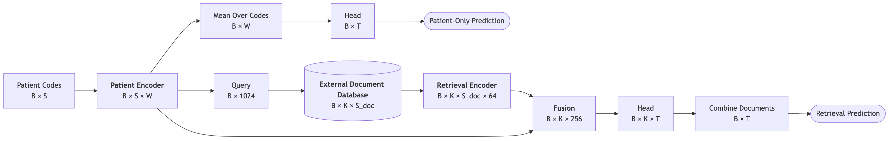
For each patient we pick a random moment in their history (the prediction time). Each task asks: will this specific code appear in the next 30 days?
The T codes are drawn at random from all codes. We vary T = 5, 25, 125, 625, 2,500. One model answers all T questions at once (multi-task learning).
Most answers are "no": many codes are rare, so the base rates are small.
Binary cross-entropy: how surprised the model is by the true answers. If it predicts probability p and the answer is yes, the cost is −log p; if no, −log(1−p). Averaged over all (patient, task) pairs.
Lower is better. Values here are small (≈0.02–0.04) because most answers are "no" and easy.
Pick a random "yes" patient and a random "no" patient. AUROC is the chance the model ranks the "yes" one higher.
0.5 = coin flip, 1.0 = perfect. Our best models reach ≈0.91.
Scaling laws are usually fitted on loss, because it changes smoothly with size.
A normal model must memorize everything in its parameters. A retrieval-augmented model can also look things up in an external library while it predicts, like an open-book exam.
125,847 passages from medical textbooks, plus one special null document (empty), so the model can always choose "nothing here helps".
"Retrieval-augmented pretraining" means the model learns with lookup switched on from the start, rather than having it bolted on afterwards.
Comparing to 125,848 keys for every patient is done with FAISS, a nearest-neighbour search library, on the GPU.
K = 4 in training, K = 1 at test (each plus the null document).
Self-attention lets tokens of one sequence look at each other. Cross-attention lets the patient's codes look at the document's words instead.
Each passage (256 tokens) is turned into vectors with Qwen3's frozen token-embedding table (151,669 × 1,024). Frozen = not trained by us.
Each patient code asks "which words in this passage matter to me?" and mixes in what it finds. Then we average over codes → one 256-number vector per (patient, document).
Important detail for later: in the retrieval models, the patient's information reaches the prediction head only through this fusion step.
With K documents, the model makes K separate predictions, one per document, and averages them, giving more weight to more relevant documents.
zk = prediction score using document k; σ = sigmoid, turning a score into a probability.
wk = how much we trust document k; the weights add up to 1.
This is called marginalizing over documents. The loss is computed on the final p, so training also teaches the query which documents to score highly.
In large language models, test loss falls in a very regular way as you add parameters (N) and data (D). That regularity lets you predict how a bigger model will do before training it.
The best loss reachable with infinite model and data. Lower floor = better design in the long run.
How fast loss falls as the model grows. Bigger α = more benefit from size.
How fast loss falls with more training patients. Bigger β = more benefit from data.
This is the "Chinchilla" form (Hoffmann et al., 2022). Here D counts training patients.
"Retrieval beats no retrieval at one size" says little. The real question is which way the gap moves as we scale up.
Fit one law per design. Compare floors (E), slopes (α, β) and the predicted loss at scales we haven't trained.
Training cost ≈ 6 × parameters × tokens processed (forward + backward). For a fixed budget: bigger model on less data, or smaller model on more?
Every run is noisy. We train 5 repeats ("draws") of each setting and put 95% intervals on everything, using the lab's simple-scaling-laws package.
| # | Configuration | Query | Documents it sees |
|---|---|---|---|
| 1 | Patient only | none | none (baseline) |
| 2 | Retrieval, learned query | trained from the patient encoder | top K + null |
| 3 | Retrieval, Qwen3 query | frozen text embedding of the last 32 codes | top K + null |
| 4 | Random documents (control) | as #2 | random passages + null, always |
#4 has exactly the same machinery and cost as #2, but the passages carry no patient-specific information. So:
| Config | Grid | Runs |
|---|---|---|
| #1 | all W, D, T | 1,200 |
| #2 | all W, D, T | 1,200 |
| #3 | 4 widths, all D, T 25 & 625 | 240 |
| #4 | 3 widths, 3 D, T 625 | 45 |
| Total | 2,685 |
#3 runs on a subset because the frozen Qwen3 text model makes each run ~10× slower.
Columbia's C2B2 GPU cluster (SLURM), about 700 GPU-hours, split between us (#1, #2) and Zach (#3, #4).
Following the lab's simple-scaling-laws guide:
One law per configuration and task count, on all its runs. Parameters get 95% intervals from a bootstrap (refit many times on resampled noise).
Fit two designs on the same grid with paired randomness, then look at the difference and its interval. "Significantly worse" = the whole interval is above 0.
R² = fraction of the variation the law explains. We report it over single runs and over cell means (average of the 5 draws).
For each compute budget, the law gives the best model size N* and the loss you'd reach there.
| T | #1 Patient only | #2 Learned query | #3 Qwen3 query | #4 Random docs |
|---|---|---|---|---|
| 5 | 0.0299 / 0.872 | 0.0370 / 0.845 | – | – |
| 25 | 0.0252 / 0.897 | 0.0309 / 0.844 | 0.0298 / 0.845 | – |
| 125 | 0.0168 / 0.894 | 0.0198 / 0.831 | – | – |
| 625 | 0.0209 / 0.909 | 0.0251 / 0.846 | 0.0255 / 0.844 | 0.0256 / 0.827 |
| 2500 | 0.0206 / 0.907 | 0.0241 / 0.840 | – | – |
Each cell: lowest mean test loss over all sizes / its AUROC. Patient-only's best is always W 128 (2 layers, 4 heads) on all 153K patients.
At every task count, the best model without retrieval beats the best model with retrieval, on both loss and AUROC.
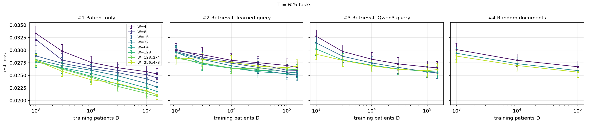
Patient only (left): lines fan out. Wider models keep improving with more data, reaching ≈0.021.
Retrieval (others): lines bunch together around 0.025–0.027. Making the encoder bigger barely helps.
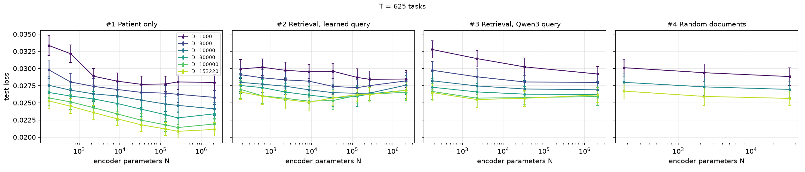
Read each line left to right: for patient-only, loss keeps dropping as N grows (most clearly with lots of data). For retrieval the lines are almost flat; past ~10K parameters some even get worse.
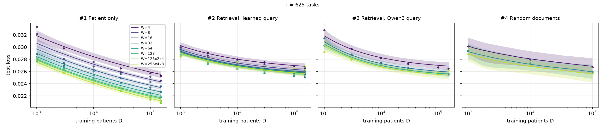
| T = 625 | Floor E [95% CI] | α (model) | β (data) | R² (cell means) |
|---|---|---|---|---|
| #1 Patient only | 0.0141 [−0.044, 0.018] | 0.23 | 0.13 | 0.96 |
| #2 Learned query | 0.0249 [0.020, 0.026] | 0.61 | 0.33 | 0.88 |
| #3 Qwen3 query | 0.0248 [−0.62, 0.026] | 0.40 | 0.45 | 0.95 |
Retrieval's floor is much higher (≈0.025 vs ≈0.014): even with infinite size it would stay worse. Its larger α, β just mean it reaches that higher floor faster. Some intervals are wide because the floor and the data term can trade off; the package flags these fits.
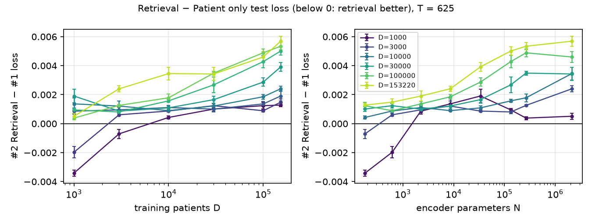
Only the tiniest models with the least data (W 4–8, D 1K) sit below zero.
Everything else is above zero, and the gap grows with more data and bigger models.
| Comparison | T | Settings | Significantly better | Significantly worse | At the largest setting |
|---|---|---|---|---|---|
| #2 − #1 | 5 | 48 | 0 | 25 | +0.0077 [+0.0046, +0.0116] |
| #2 − #1 | 25 | 48 | 0 | 28 | +0.0056 [+0.0037, +0.0077] |
| #2 − #1 | 125 | 48 | 1 | 34 | +0.0032 [+0.0026, +0.0038] |
| #2 − #1 | 625 | 48 | 3 | 37 | +0.0045 [+0.0038, +0.0051] |
| #2 − #1 | 2500 | 48 | 3 | 38 | +0.0035 [+0.0030, +0.0039] |
| #3 − #1 | 625 | 24 | 0 | 19 | +0.0039 [+0.0030, +0.0048] |
| #3 − #2 | 625 | 24 | 0 | 5 | −0.0004 [−0.0009, +0.0001] |
"Significantly" = the 95% interval excludes 0. Largest setting = W 256 (4 layers), D 153K. The Qwen3 query is no better than the learned one.
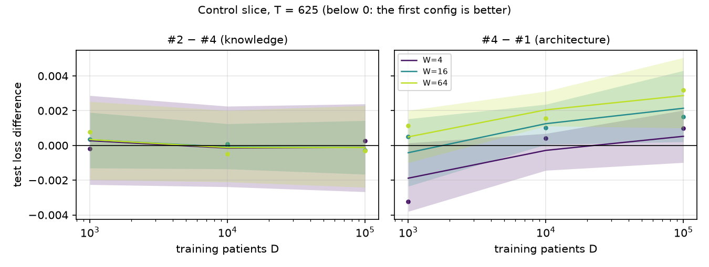
#2 − #4 is not significant in any of the 9 settings (at the largest: −0.0001 [−0.0024, +0.0023]). Retrieved passages are no better than random ones.
#4 − #1 is significantly worse in 4 of 9 settings (largest: +0.0029 [+0.0010, +0.0051]); it helps only the tiniest model at 1K patients.
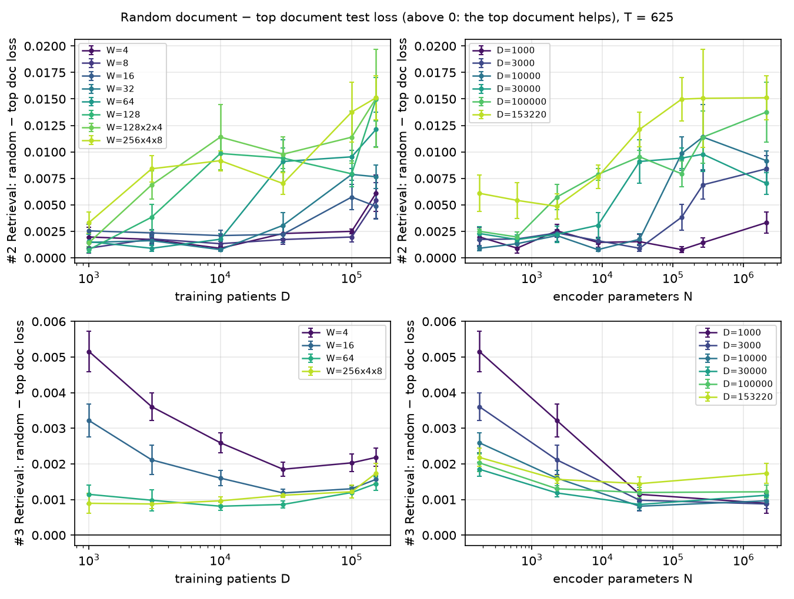
Swapping in a random passage at test makes #2 worse in 1,133 of 1,200 runs (by 0.0086 on average) and #3 worse in 236 of 240 (by 0.0019).
Combined with the control, the picture is: the model learns to depend on the passage it is trained with, yet gains nothing from what that passage says.
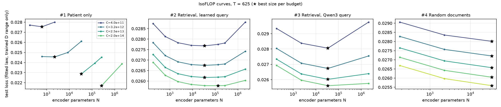
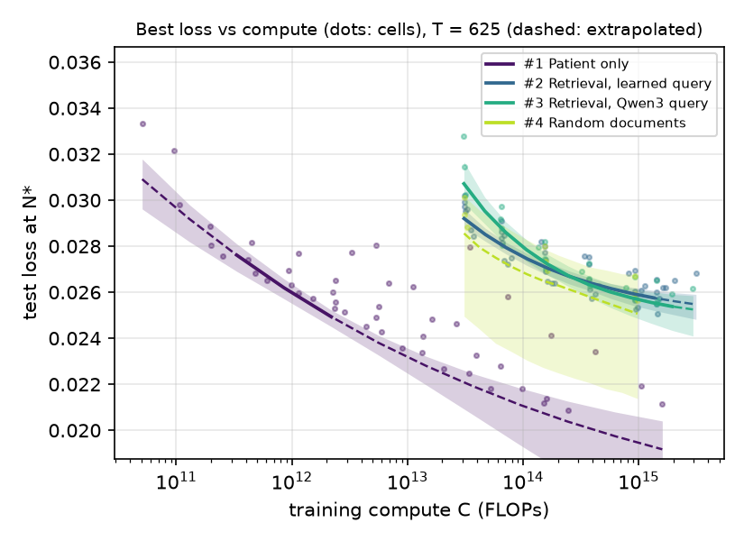
For any compute budget, patient-only reaches lower loss, and retrieval costs far more compute to start with (the fusion and document side are big). Dashed parts are extrapolations: at large budgets the law wants more patients than the 153K we have.
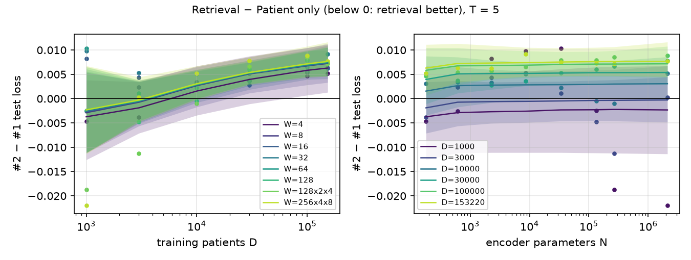
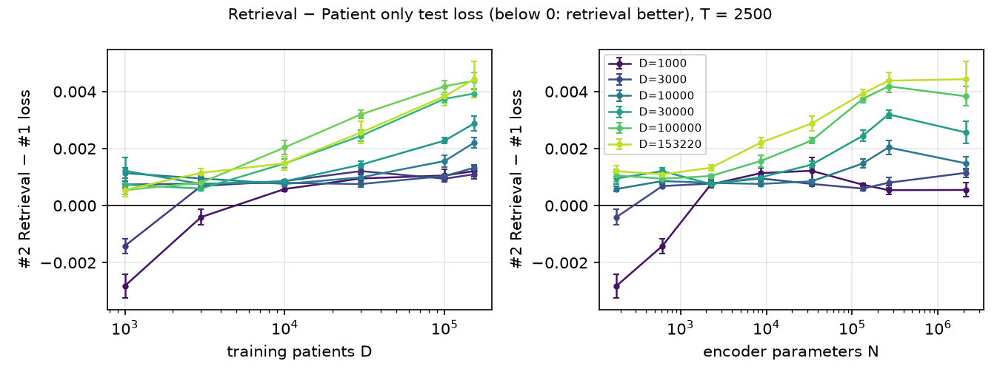
All 41 plots for T = 5, 25, 125, 625 and 2,500 are in results/scaling_laws/README.md.
Patient-only wins at every task count. Retrieval helps only tiny models with ~1K patients, and the gap grows with data and model size.
Random passages work as well as retrieved ones (#2 ≈ #4).
Retrieval models barely improve with encoder size; the patient's information must squeeze through the fusion step.
A pretrained Qwen3 text query performs like the learned query.